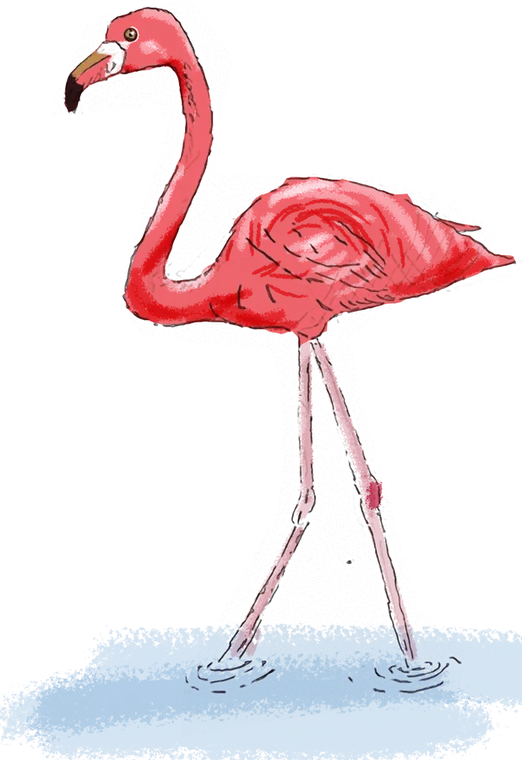
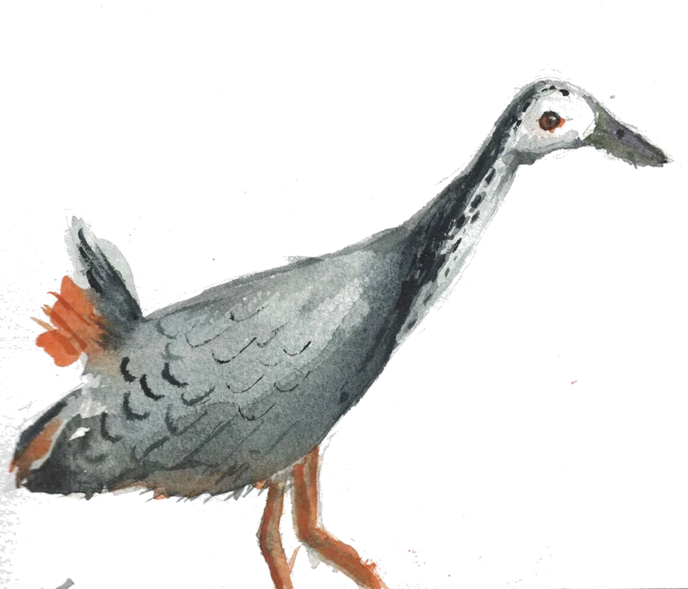
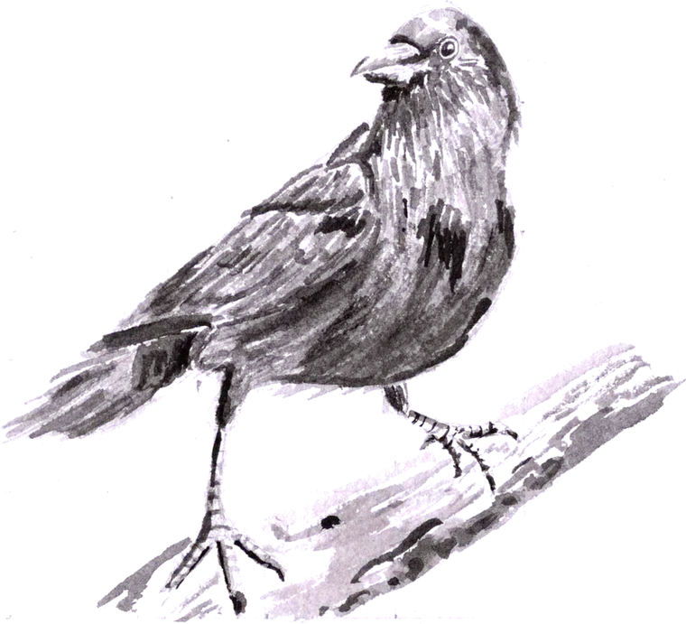
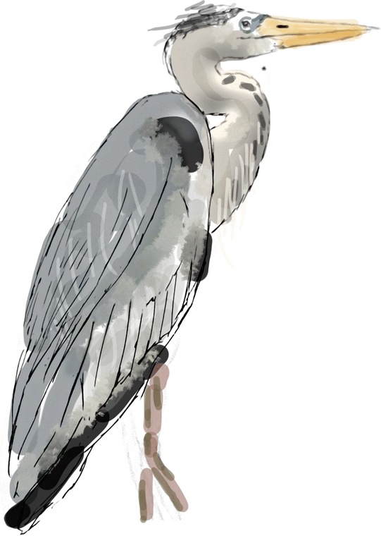

Folio · Design manifesto · v2.1 · tightened after the semester audit
The drawings carry the colour.
Everything around them stays quiet.
Five principles first; every rule below names the ones it serves. When a rule and a principle disagree, change the rule. Where a rule can be measured, it is a number (section 00).
P1
The drawings carry the colour.
Drawings whole, on white, in plain rectangles, never cropped or tinted. Show the strongest thirty, not every board.
P2
Which semester, which chapter, at a glance.
Colour, bird, bar and edge place people. The kicker stays on one line; the chapter nav shows that more chapters exist.
P3
Consistency is the default; difference is earned.
Hero, facts, captions, chapter nav and states are shared parts. A voice changes type, paper and colour, nothing else.
P4
Words, numbers and status say what is true.
First person, sentence case, every figure captioned and described. Every semester is told in acts and ends by looking back.
P5
Access is part of the design.
Phones first: drawings 300 px wide or more, 44 px targets, 4.5:1 for all text, voice labels included.
00 · Budgets
Each limit comes from the semester audit; the last column is the worst page today. Phase 2 makes npm run check enforce them.
01 · Colour
90% paper and ink, 10% colour. Colour marks place or state, never decoration.
Paper and ink
Accents
One colour per semester
fill above, text shade below
On paper · academic and professional
On ink · Personal, footer, dark bands
Components use roles (--text, --text-muted, --accent-text, --rule, --surface), which a dark band redefines. One accent per view: on a project page it's the semester colour. Contrast is measured from main.css as the sheet is drawn.
02 · Type
A serif for titles, a sans for everything read, a mono for data. Eight sizes and no others.

Semester 3 · Architectural Design III · 2025
Strategic insertions in the urban fabric of Henveiru.
Malé has become a monotonous concrete jungle. This project works by precise, small interventions rather than a single master plan.
Section through the stair core, looking east
03 · Language
Words are part of the interface: the same thing is always said the same way.
Case
Sentence case for every heading, button and label.
Captions
Every figure has one: what it is, then the scale. Sentence case, no brackets.
Alt text
Describe what a reader would see; the caption already names it.
Numbers
A chapter number is its own label, so a screen reader can tell it apart.
Status
A promise has a date, or it isn't made.
Links
A link says where it goes; it's always underlined.
Credit
Group work is marked as group work, on the site and in the book.
Voice
First person, about the design. Never a sales pitch to the reader.
04 · Grid and space
12 columns, 24 px gutters, 1180 px at most. Layouts are spans, and only these.
Phone · 1 columnDesigned first. Nothing scrolls sideways at 375 px. Drawing sets go to one column below 480 px.
Tablet · 2 columns820 px and under: spans stack; the lead image comes first.
Desktop · 12 columnsSpace inside a chapter from 4 to 36 px; between chapters, a rule and 40–68 px.
05 · Form and motion
Four corners, six spacing steps, one shadow, one curve. Never rounded or animated for effect.
4 pxdrawings
8 pxphotos, tiles
14 pxcards
pillbuttons, chips
4
8
12
16
24
36
spacing steps, px
hover · things that move · content entering
06 · States
Current is the same shape, filled. Focus is a 2 px terracotta ring, 3 px off, never removed.
On paper
On ink
Current is semantic as well as visual: aria-current sets it. If it looks clickable it must do something; images open the lightbox but don't grow on hover. Every link and chip is 44 px tall on a phone.
07 · Place markers
Bird, colour, progress bar and page edge tell you where you are, in the book and on the site.



Progress bar
Six segments, filled to the current semester, in a 1 px ink outline: on every cover since Semester 1, and under every project title and in the pager.
Page edge and reading bar
6 px of the semester colour down the right; 3 px across the top. In the book: six edge tabs.
Chapter nav
Sticky, one chip per chapter, current filled with the semester's text shade. When the row overflows, its edge fades.
A bird appears behind a project's title at 26%, on the book's semester opener at 100%, or beside each semester in an index. It ends above the intro and never sits under body text. Never in the navbar, never to fill a corner, never mirrored or recoloured.
08 · Voices
A project may speak like its own boards. It never changes how the site is built or how it behaves.
Sem 1–3 · the kit
Instrument Serif and Inter, as the shell is
Sem 4 · research book
Source Sans 3 heavy, Garamond italic, Plex labels
Sem 5 · Design V boards
Source Sans 3 bold and italic, white ground
Engineering · drafting sheet
Grid paper, mono labels, square corners
Personal · after hours
The same shell on ink: sky for illustration, terracotta for code
Sem 6
Chosen with the final project
A voice can change
A voice can't change
Not yet in line: Semesters 4 and 5 bring their own hero, facts, chapter nav and an arched lead image. They keep their type and colour and move onto the shared parts (pass 3).
09 · Page shapes
A studio project and a code story are the same page, one on paper and one on ink.
Project page · paper
Code story · ink
10 · Story
A semester is a story of decisions, not a catalogue of drawing types. Every one runs in the same five acts.
Act 1
What was the brief really asking, and what did I decide it was about?
Act 2
The one sentence the project stands on, and the drawing that shows it.
Act 3
What changed my mind: models, tests and dead ends, in order.
Act 4
Plans, sections and views, the strongest only, each captioned and described.
Act 5
What I'd do differently now, and what carried into the next semester.
Chapter titles may be the project's own words ("Searching", "The old port"); the acts underneath are what's fixed. Semesters 5 and 6 already work this way; 1 to 3 list drawing types and need the story written.
11 · Empty, loading, failed
Live data and unfinished work say exactly what is known, and nothing more.
Count known
Read at build time, rebuilt every morning.
Count unknown
Never "0 of 0" or a guessed figure.
Feed failed
No "couldn't load" box on a page built in advance.
Not finished
A place in the progress bar, not a blank page.
Before a change ships
The review for every page PR, by principle.
P1
P2
P3
P4
P5
Let the drawings lead. Let every page say where it is.
Let the rules serve the work.